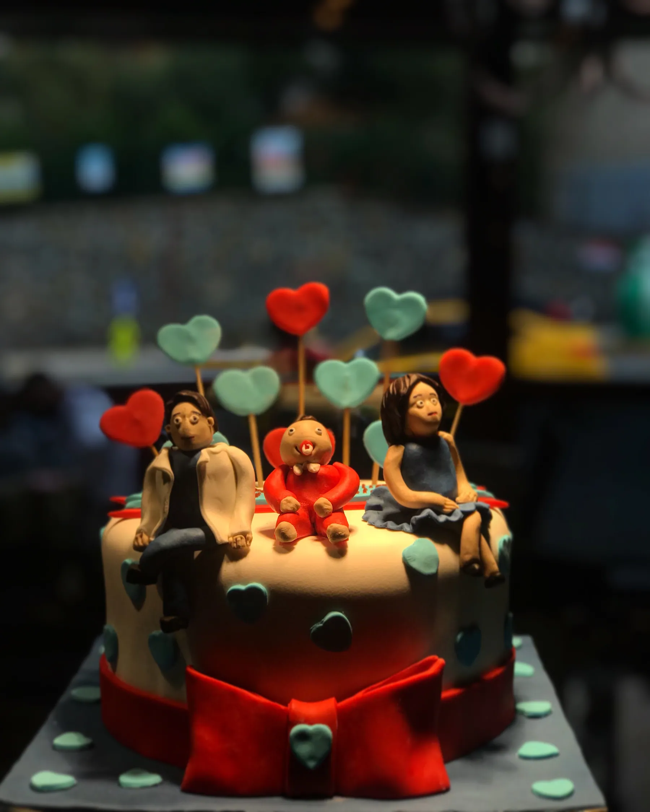

Her sabah, günün ilk ışıklarıyla birlikte, fırınımızdan yeni çıkmış ekmek, poğaça, açma, simit ve böreklerle sıcak bir günaydın diyoruz.

1988’den bu yana
1988’den bu yana müşteri memnuniyeti odaklı çalışıyoruz: ürünlerimizi tamamen hijyen ilkelerine uygun şekilde üretiyor, her zaman taze ve lezzetli olarak, nitelikli ve güler yüzlü personelimizin servisiyle sunuyoruz.
Fırından tatlı ve tuzlu çeşitler, rengarenk tartoletler, cheesecake’ler, ofis ve çay saati ikramları, özel günleriniz, kutlama ve tebrikleriniz için çeşit çeşit pastalar, geleneksel sütlü tatlılar ve dondurma çeşitleri menümüzde.
- 1988
- yılından bu yana
- 3
- şube: Üsküdar, Pendik, Tuzla
- 05:00
- her gün açılış